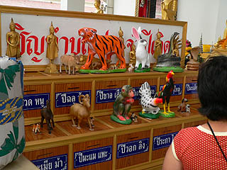
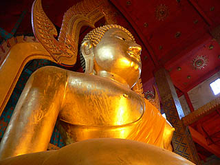
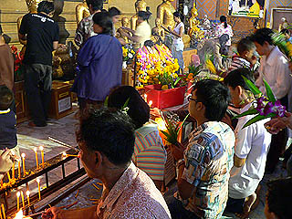
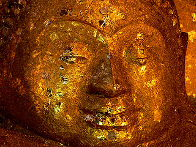
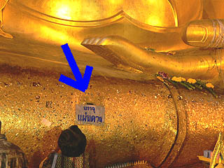
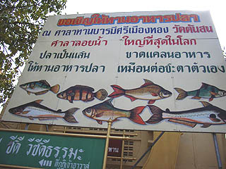

ワット
トンソン/アントン県
WatTonSon/AngThong
再び大仏三昧の修行を続ける。
アントン出身の運ちゃんは心なしか嬉しそう。
これから向かうワットトンソンは運ちゃんの通っていた学校のすぐ近くで、学生時代はしょっちゅう来ていたという。
まさか観光客をここに連れてくるとは思わなかったそうな。そりゃそうだ。
そういえばバンコクを出発する際にも「あの〜アントンのこことかこことか行きたいんだけど〜」というハナシをしたら「ギャハハハ、アナタはホントに日本人かあ？」と笑われてしまい、バンコクの人間だってそんなとこ行かないぞ、と言われてしまいました。そっか。そんなマイナーなのか、アントン。
アントンの中心街はざらっとした感じの、いかにもタイの地方都市といった風情だ。
で、その中心街に程近いワットトンソンへ。ここもまた大勢の人々が参拝に来ていた。
境内では揃いのジャージを着た係員が車の誘導をしていた。
駐車場に入るといきなり露座の大仏さんがお出迎え。
大きさは10メートルといったところだろか。
わざわざ背中にポールを建ててまで頭上に笠を設置している。これもまた篤き信仰心のなせる技か。
本堂の前には十二支の動物が並んでいた。動物があまりにもおもちゃっぽいので一瞬、射的でもやってるのかと思ったがさにあらず。
100円ショップで買って来たようなチープな十二支だが皆さん真剣にお賽銭を投入してました。

で、本堂へ。
おおお、おりまする、おりまする。
20メートルはあろうかという大仏さんである。

ここの大仏さんは光背が付いていてしかも台座も高く、内装もゴージャスなのでかなり立派に見える。
私が今まで見たタイの大仏の中でも屈指の美しさといえよう。
大仏を見ても「どのくらいでかいか」と「中に入れるかどうか」くらいしか考えない私もさすがにここの大仏の美しさには感動せざるを得なかった。
そうなると塗られている金の純度も若干高く見えるから不思議だ。

大仏さんの前には大是非の人達が花を供えロウソクに火を灯し、真剣に祈っている。
聞けば大層古い寺だという。
で、階段を登り、一段高くなっている大仏さんのお膝元に接近する。
お膝元では皆さん金箔貼りに余念がない。
手の届く範囲は全てびっちり金箔が貼られている。
大仏さんの指先と足下半分がツートンカラーになっているのがおわかりいただけるだろか。
参拝客がどんどん増えて来た。
運ちゃん曰く「いつもこんな感じですよ〜ははは。」との事。

周囲の仏像も金箔だらけ。
そんな中気になる参拝グッズを発見。
大仏さんの前にテーブルが置かれており皆カリカリと何か書き込んでいる。
最初、金箔かと思ったのだが金色の薄い金属製のシートで何やら不思議な図像がプレスされている。
早速私もチャレンジ。鉄芯で名前を書き込んで・・・あとは何を書けば良いんだろう？
周りを見回しても勿論タイ語だから分かるはずもなく、とりあえず家内安全的な当たり障りのない事を書いてみました。
で、お膝元の小さな口に入れると願いが叶う仕組み・・・だと思うのだが、もしかしたら全然トンチンカンな事をしたのかもしれない。
ひょっとしたら「本堂再建において建設奉仕活動が可能な者募集！」とか「即真仏になりたい者募集！」とかだったらどうしよう・・・

ここから投入されたシートは台座下のスペースに落下し回収される、ようだ。
大仏さんの脇には僧侶の像が並んでいた。
もちろんこちらのお方のポーズに目が釘付け。↑
美しい大仏さんに会えてゴキゲンな私に運ちゃんが「あっちに川があるから見ていけ」という。えっ、川ですか？

で、行ってみると川に艀が浮かんでいる。
仏壇みたいに巨大なスピーカーからは何故か尋常じゃないボリュームのタイ演歌が垂れ流し。
何とな〜く想像はしていたが・・・やっぱりウルトラモッシュ状態のエサ蒔きコーナーだった。
エサを蒔けばナマズが一番上を目指してのたうち回り、賽銭を投げれば的外れ。
嗚呼、折角美しい大仏を見て心が洗われたのに、もうドロドロだあ〜
次の修行場へ
泰国珍寺武者修行
珍寺大道場 HOME